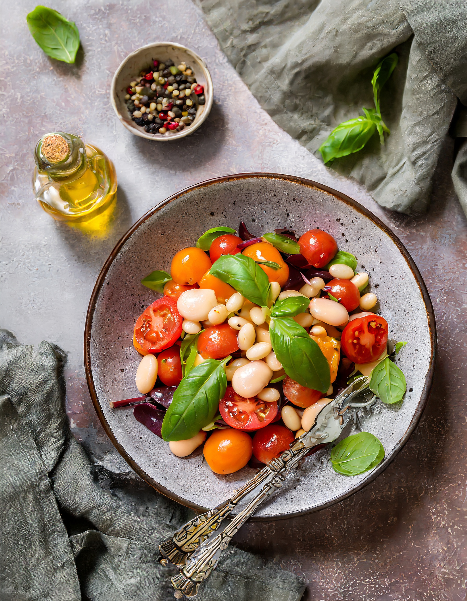

Mit welchen Zutaten möchtest du kochen?
Suchst du nach einem bestimmten Menu?
Deine Rezeptvorschläge

Salat mit weissen Bohnen, Cherrytomaten und Basilikum
Zutaten
| 400 g | gekochte Soissonsbohnen |
| 1 | rote Zwiebel |
| 300 g | Cherrytomate |
| 1 Bund | Basilikum |
| 2 | Knoblauchzehen |
| 2 | grosse Karotten |
| 6 EL | Olivenöl |
| 1 Prise | Salz |
| 4 EL | Apfelessig |
| 1 EL | flüssiger Honig |
| 1 TL | granulierter Cayennepfeffer |
Zubereitungsdauer
20 Minuten

Tagliatelle mit Tomaten, Zucchetti und Basilikum
Zutaten
| 350 g | Tagliatelle |
| 1 Prise | Salz |
| 500 g | Tomaten, z.B. gelb, rot |
| 3 | Knoblauchzehen |
| 1 | kleine Zucchetti |
| 2 | Karotten |
| 2 EL | Olivenöl |
| 1 Prise | Salz |
| wenig | Pfeffer |
| 1/2 Bund | Basilikum |
| 40 g | Parmesan |
Zubereitungsdauer
25 Minuten
Hast du ein Rezept, welches du teilen möchtest?
Bitte teile uns dein Rezept und deinen Namen im Kontaktformular mit, damit wir dich als Verfasser angeben können. Danke!